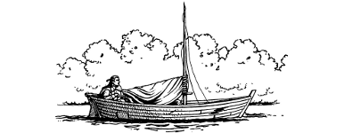
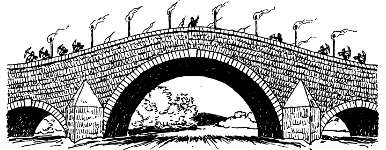

102
Having finished your briefing, Gwynian and Lone Wolf show you to a room at the rear of the tavern where some items of clothing have been laid out for your inspection. Lone Wolf tells you to take off your helmet and Kai battle-armour and exchange them for the plain green tunic, breeches, and cloak of a Kai journeyman that lie draped across a table.
‘These clothes will serve you well,’ he says, as he buckles the clasp of your cloak. ‘They are far less likely to attract unwelcome attentions during your journey to Duadon.’
Having exchanged your clothes, you are provided with a meal and told to stay here in this room until midnight—the time when your mission is set to begin. Lone Wolf and Gwynian bid you good luck and leave the room to allow you to rest. You manage to get a few hours’ uneasy sleep before Gwynian returns shortly before midnight. The sage escorts you from the tavern and leads you down to the waterfront, to a wharf where a battered little sailboat lies tethered alongside a river barge. At first glance this sailboat looks completely unseaworthy, but upon closer inspection you see that it has been carefully camouflaged with broken timbers and ripped canvas to give the impression that it is a wreck. Stowed on board are a pair of oars and enough food and water for the voyage downstream to Tekaro. You board the boat and Gwynian casts off the mooring rope, bidding you good luck and godspeed as gently the current carries you away.
{kind=link}

The waters of the Quarl are fast-flowing and you have no need of sail nor oar to propel you. By means of the rudder, you are able to steer the boat and let the current carry you swiftly downstream towards your destination. When dawn breaks you are able to take stock of your surroundings. You are making good progress and you calculate that it should take you no more than three days to reach Tekaro. The first day passes uneventfully and you are able to relax and enjoy the views of the fertile countryside that fringes the Quarl. But as darkness begins to fall at the end of the second day, you catch sight of something in the distance that sets your pulse racing. As you round a bend, you see a stone bridge spanning the river little more than a mile downstream. A line of burning torches is fixed along its parapeted walls, and armed guards are positioned on either side of its span. A look at your map tells you that this bridge carries the road that connects the towns of Woeld and Tido, and when you magnify your vision, you see that the guards are enemy soldiers. They wear studded leather jerkins and have the circle-and-star emblem of Eldenora engraved upon their conical steel helmets. To your dismay, an eagle-eyed lookout posted at the centre of the bridge sees your boat approaching. He alerts his fellow guards and quickly they line up along the parapet of the bridge and unshoulder their bows. One of their number blows a shrill whistle which attracts the attention of a second group who are moving through the trees which border the right bank. Your stomach churns when you catch your first sight of these troops for they are not human—they are Vorka. These lizard-like creatures move with a sinister grace which betrays their ancient origins. A cold fire glows in the depths of their sharp, blinking eyes, and their scaly bodies are bedecked with fragments of armour, mostly rotting leather and chainmail looted from the bodies of their slain foes.
{kind=link}

As your boat drifts inexorably towards the bridge, you see the Eldenorans are getting ready to fire their first volley. The tips of some of their arrows are wound round with strips of oily cloth and they have been set alight. Hurriedly you look for some means of avoiding these archers and their Vorka cohorts, but only the river’s wooded left bank seems devoid of the enemy.
If you wish to steer your boat towards the left bank and take cover there among the trees, turn to 149.
If you choose to defy the Eldenoran archers, you can let your boat continue downstream towards the bridge by turning to 313.